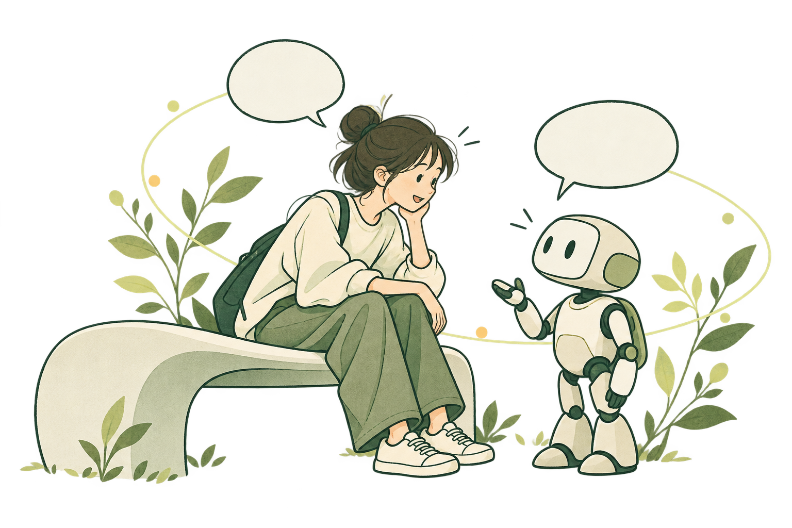
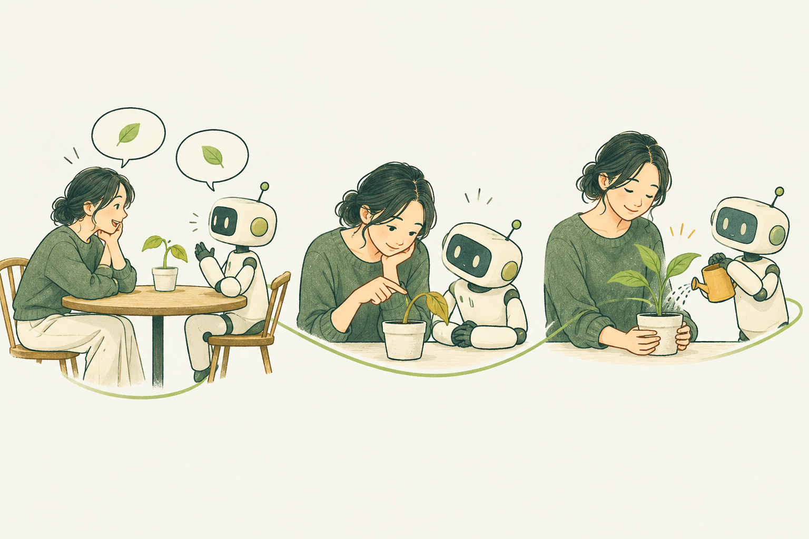
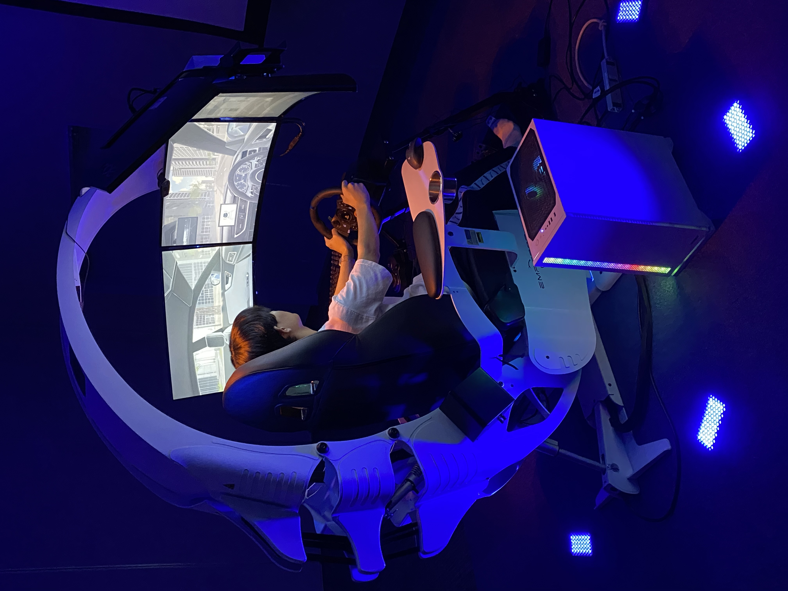
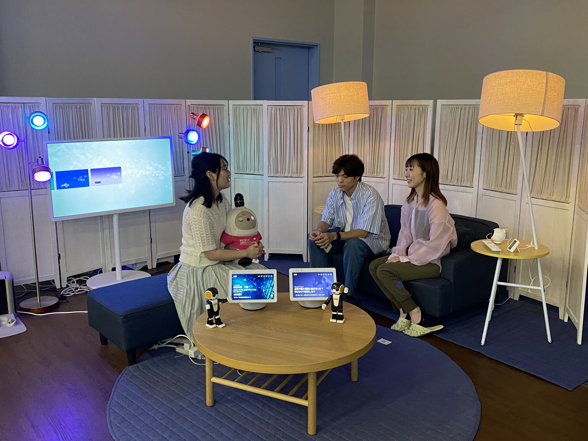
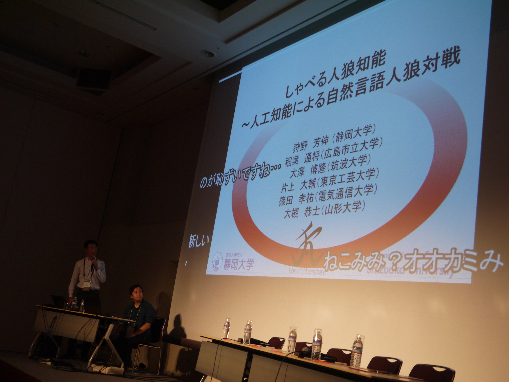
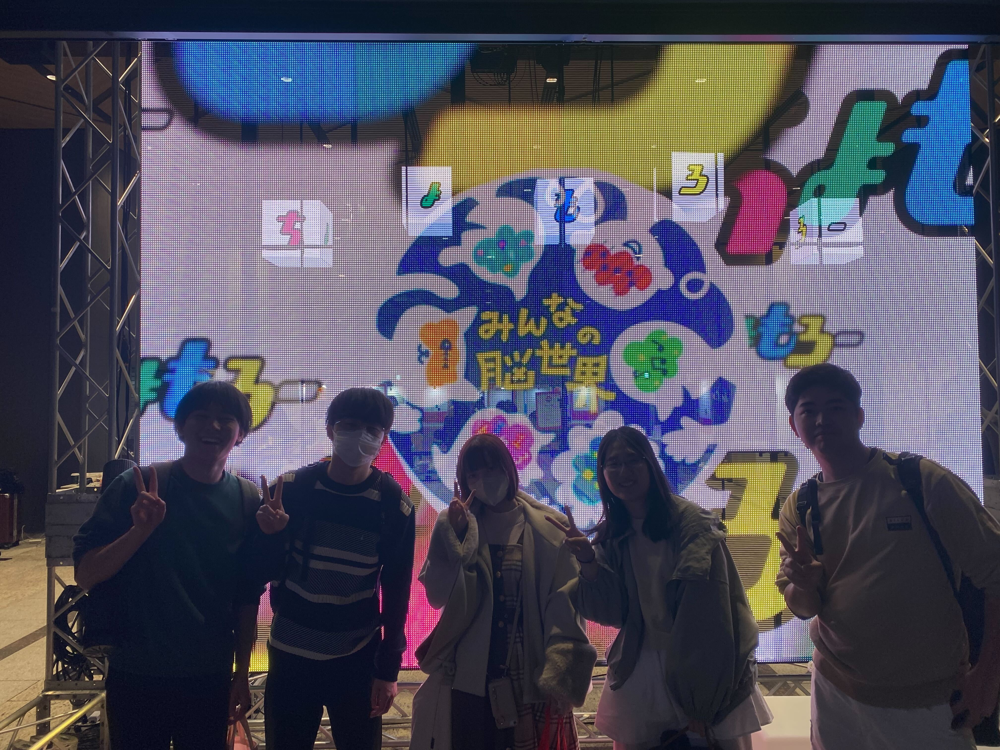

人間共生システム研究室
東京工芸大学 工学部 片上研究室
Human Symbiotic Systems Laboratory

技術を、人との
関係から考える。
AIが生活の中で身近な存在になるとき、
大切なのは、どのように人と関わるか。
人間共生システム研究室では、個性豊かな人々と柔軟に関わるエージェントやロボットを研究しています。対話、信頼、社会性を手がかりに、人と知的なシステムが共に生活する世界を目指します。
片上大輔からのメッセージ ↗
話して、気づいて、一緒にできることを増やす。

PROFESSOR / MESSAGE
個性豊かな人と、
柔軟に関わるAIを。
東京工芸大学 工学部 工学科 情報コース 教授
片上 大輔 / 博士（工学）
エージェントやロボットが人間の生活空間で活躍する時代に、人とAIの間には新しいインタラクションが生まれています。その関わりをどのように設計するかが、よりよい人間共生の世界につながります。
私たちは、自律的なエージェントやロボットが、個性豊かな多くの人々と共に生活し、柔軟に関わることを目指して研究しています。
片上大輔のプロフィール・研究活動 ↗02 / RESEARCH
共生を探る、
さまざまなアプローチ。

01MOBILITY & TRUST
移動を支える、信頼できる相棒。
運転支援エージェントとの対話を通じて、安全な運転と継続的な関係づくりを探ります。
運転支援エージェント ↗
02DIALOGUE & CARE
対話から、暮らしに寄り添う。
自然な対話システムや認知症介護のトレーニングを通じて、人を支える関わりを設計します。
対話システム・生活支援 ↗
人狼知能 / CEDEC201703SOCIAL INTELLIGENCE
ことばの先にある、社会性。
人狼知能やHAIの研究を通じて、説得・協調・信頼を生むインタラクションを探究します。
人狼知能・HAI ↗さらに、雰囲気工学や情報可視化など、多様な視点から人間共生システムに取り組んでいます。
4年生11名が卒業。坂本さんが総代として学長賞を受賞。
↗メディアAIエージェントとの「対話」を通じ、人とシステムが共生する社会をデザインする。
↗メディアAIと人は、どこまで信頼し合えるのか。片上大輔のインタビューが公開。
↗受賞李基響さんがICEIC2026・WEIE WorkshopでBest Presentation Awardを受賞。
↗受賞ニューロダイバーシティアワード受賞のプレスリリースが公開。
↗研究・活動坂本朗生さんの論文がFSS2025のショートノート特集論文に採録。
↗研究・活動李基響さんが国際会議TAAI2025で口頭発表。
↗研究・活動宇野愛華さんが国際会議HAI2025でポスター発表。
↗受賞坂本朗生さんがFSS2025の優秀発表賞を受賞。
↗受賞認知症家族介護者のための取り組みがニューロダイバーシティアワード2025を受賞。
↗研究・活動林教授ご夫妻が客員研究員として3か月滞在。
↗研究・活動王俊杰さん、坂本朗生さん、髙野智椰さんがFSS2025で口頭発表。
↗受賞片上が共著の発表がJSAI2025の全国大会優秀賞を受賞。
↗メディア研究室が取材を受け、運転支援・スマートホームのデモを紹介。
↗メディア「未来の相棒はAI？人とエージェントの新しい関係性」のインタビュー記事が公開。
↗受賞「裕子ママを救えっ！」と「心の字幕研究所」がDiscover！で受賞。
↗研究・活動李基響さんがJSAI2025で発表。片上の共著発表も実施。
↗研究・活動博士後期課程1名・4年生13名が卒業。李さんが学長賞と松川サク工業賞を受賞。
↗受賞石黒仁菜さんがHAIシンポジウム2025の学生奨励賞を受賞。
↗研究・活動研究室の13名がコミュニケーションとインタラクション合同研究討論会で発表。
↗
IDEAS GROW TOGETHER.04 / PEOPLE
一人ひとりの問いが、
研究のはじまり。
人とAIの未来を、一緒に考え、つくる。
研究・発表・社会との交流を通じて、
それぞれの関心を育てていきます。
FOR FUTURE MEMBERS
「人とAI」に興味がある。
その好奇心から、はじめよう。
研究テーマや研究室での学びについて、配属案内をご覧ください。